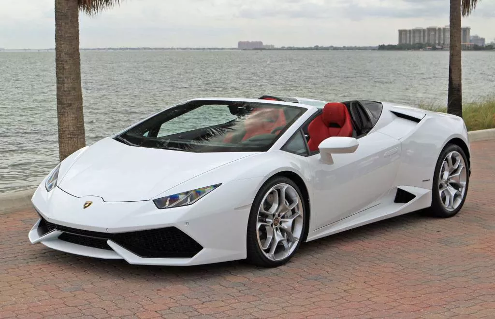
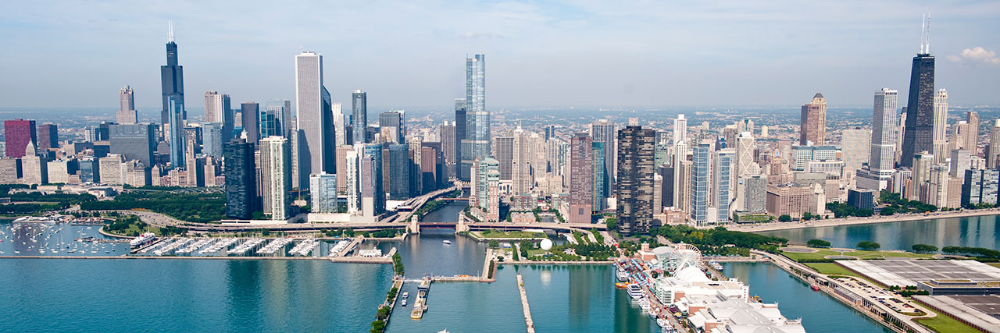

I am a 46 old male from Bulgaria.
I love cars! Sports cars!
Many times I have been asked, what make me travel across the world?!
I started travel since i was 22. I have been to many cities, Europe and USA.
Brussels
Unassuming Brussels is the capital of Belgium, Flanders and Europe.
Medieval Grand-Place, is indeed grand, with many 17th-century buildings and daily flower markets.
The flowers are beautiful and colors are amazing. You are going to get in love with Brussels.

The other famous thing about Brussels is chocolate.
Munich
In 2012 I visited Munich the capital and the most populated city in the German state of Bavaria, on the banks of River Isar north of the Bavarian Alps. Munich is also the third largest city in Germany, after Berlin and Hamburg.
The next day I rented a BMW and drove on endless
German autobahns down to the famous castles
Neuschwanstein and
Hohenschwangau.

Of course I have to mention the famous Oktoberfest.
Chicago
The first time I went to Chicago, I was immpressed by the skyscrapers. It was very cold and windy. Regardless, I love Chicago and go there several times a year.
